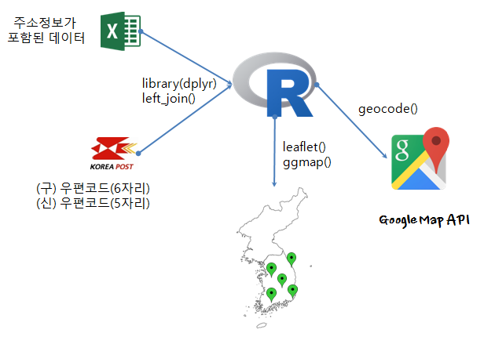
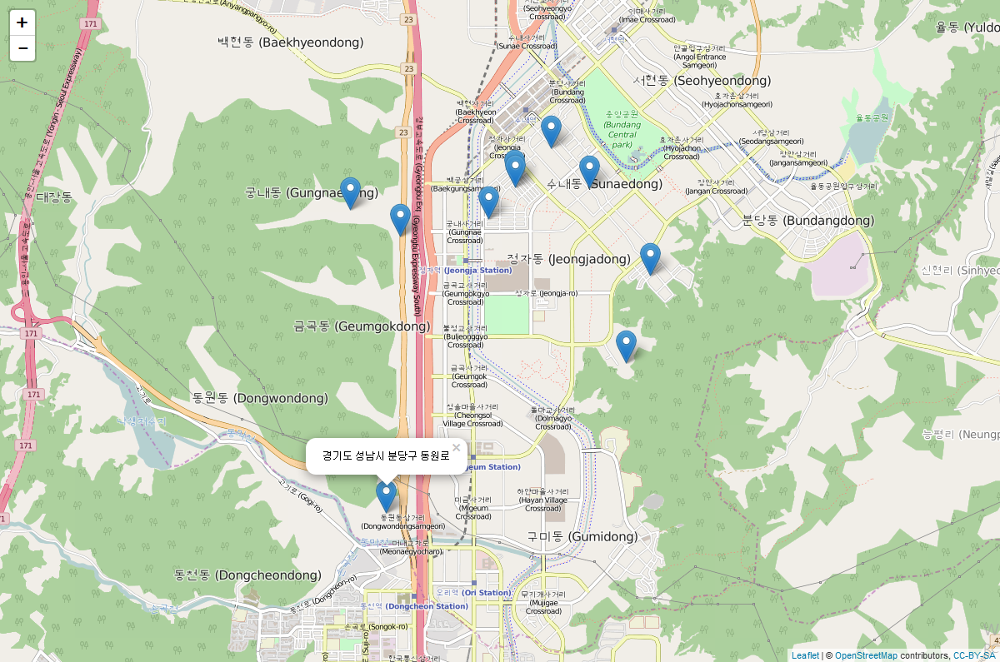

데이터 과학
우편번호 지리정보 시각화
학습 목표
- 대한민국 우편번호를 행정표준코드관리시스템에 접속해서 다운로드한다.
- 데이터 정제과정을 통해 지리정보 시각화를 위한 데이터 품질을 높인다.
- 지리정보를 표식하는 가장 기본적인 작업흐름을 숙지한다.
우편번호가 담긴 지리정보 시각화
행정표준코드관리시스템에서 우편번호를 다운로드 받는 경우 6자리 이전 우편번호를 습득하게 된다. 최신 5자리 우편번호는 인터넷 우체국 웹사이트에서 다운로드 받을 수 있다. 물론 2015.06.25일 기준 6 자리 구 우편번호도 함께 다운로드 가능하다.
우편번호가 담긴 데이터를 입수했다면, 다음 단계로 지리정보 시각화를 하려는 목표 데이터의 우편번호를 결합한다. 지리정보 시각화 데이터에 우편번호와 함께 주소정보가 있을 수 있으나, 정확하지 않을 수 있어 데이터 정제 차원에서 인터넷 우체국에서 다운로드 받은 정보와 결합을 추천한다. dplyr 팩키지 left_join() 함수에 데이터를 병합하는데 키로 우편번호를 사용한다.
지리정보 시각화를 위한 데이터에 주소정보가 결합되면, 다음 단계로 깨끗한 주소정보를 ggmap 팩키지 geocode() 함수에 던져 위도와 경도 정보를 받아온다.
위도, 경도 정보가 깨끗한 주소정보와 함께 결합되면 leaflet 팩키지 지리정보시각화 함수를 사용하여 시각화한다. 단순히 지리정보를 표식하여 지도에 찍고, 특정 표식을 클릭하게 되면 주소를 표식한다. 경기도 성남시 지역 10곳을 무작위로 뽑아 우편번호 정보를 이용하여 지도에 표식한다.

사전준비 사항
- 해당 우편번호가 담긴 데이터 : 예전 6자리 우편번호 혹은 최신 5자리 우편번호
- 우편번호 데이터 인코딩 현황 확인 : 윈도우 환경이라면 신경쓸 것 없다.
- 맥 혹은 리눅스를 사용하거나,
utf-8을 기본 인코딩으로 사용하는 경우 인코딩을 일치시킨다. CP949,EUC-KR로 되어있는 경우utf-8으로 변경한다.- RStudio 및 Hadley Wickham이 작성한 대부분의 팩키지는
utf-8을 기본 인코딩으로 사용한다. - PC 플랫폼이 아닌 웹기반으로 작업하는 경우
utf-8으로 인코딩 표준을 준수한다.
- 맥 혹은 리눅스를 사용하거나,
##==========================================================================
## 팩키지 및 우편번호 데이터 불러오기
##==========================================================================
library(readr); library(dplyr); library(readxl); library(ggmap); library(leaflet)
setwd("~/Dropbox/01_data_science") # 윈도우
# 우편번호 코드 (5자리)
post.nrd <- read_delim("kor-map/우편번호-5자리-경기도.txt", delim="|")
names(post.nrd) <- paste0("v",seq(1,26,1))
post.nrd <- post.nrd %>% select(v1,v2,v4,v6,v9) %>%
rename(post_code=v1,sido=v2, sigungu=v4, emd=v6, gil=v9) %>%
mutate(addr=paste(sido,sigungu,gil)) %>%
select(post_code, addr)
post.nrd
# 성남지역 무작위 10
gongbo.rd <- read_excel("/data/random_100.xlsx", sheet="성남지역")
names(gongbo.rd) <- c("dong","name","post_code","addr1","addr2")
gongbo.rd
# 데이터 자료형 일치 (문자형으로 통일)
post.nrd$post_code <- sapply(post.nrd$post_code, as.character)
addr.dt <- left_join(gongbo.rd, post.nrd, by="post_code")
addr.dt
##==========================================================================
## 우편번호 --> 주소 --> 위도경도 (geocode)
##==========================================================================
addr.lonlat <- addr.dt %>% select(post_code, addr)
geo.lonlat <- geocode(enc2utf8(addr.lonlat$addr), source='google', output="latlona")
addr.mst <- bind_cols(addr.lonlat,geo.lonlat)
addr.mst
##==========================================================================
## 지리정보 시각화 leaflet
##==========================================================================
leaflet(data = addr.mst) %>% addTiles() %>%
addMarkers(~lon, ~lat, popup = ~as.character(addr))leaflet 팩키지는 R에서 지리정보 시각화를 위한 자바스크립트를 사용할 수 있도록 만들어졌다. 따라서 웹에서 자바스크립트로 코드 몇줄로 간단히 구현한 효과를 볼 수 있다.
